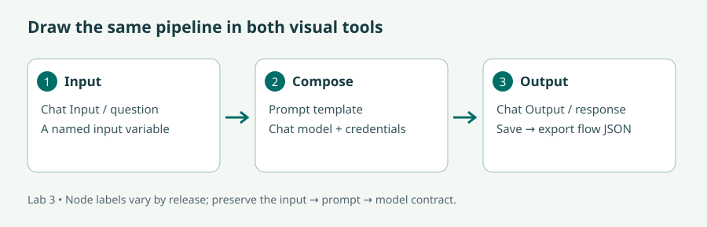
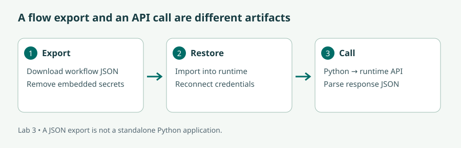

How to build with Langchain 10x easier · LangFlow & Flowise
Watch the visual overview. This older walkthrough is useful for the node-and-connection concept; its menus and package APIs may differ from current releases.
Compose a Python pipeline, prototype it visually, and call your exported workflows from an application.
Read the lecture or follow the video route, then complete the illustrated lab and the checks. The videos cover selected concepts; the short bridge notes identify the remaining material. Allow six learning hours per day, with breaks in addition.
Audience: AI Developers and Engineers; Data Scientists and Machine Learning Practitioners; Software Developers; AI Enthusiasts; Entrepreneurs and Business Owners; IT Professionals.
New to Python? Before starting, practise defining a function, importing a package, reading a text file, using a dictionary, and creating a virtual environment. Later modules provide a short bridge back to these skills.
| # | Curriculum objective | Where to learn it |
|---|---|---|
| 1 | Understand how to use the LangChain framework | Lesson 1 + lab |
| 2 | Use the various components in Langchain to create compelling artificial intelligence (AI) applications | Lesson 1 + lab |
| 3 | Prototype LangChain applications using LangFLow | Lesson 2 + lab |
| 4 | Prototype LangChain applications using Flowise | Lesson 3 + lab |
| 5 | Download the applications created using LangFlow and Flowise and use it programmatically using Python | Lesson 4 + lab |
| 6 | Connect to private and proprietary data using LlamaIndex | Lesson 5 + lab |
90 min: LangChain components.
90 min: Python pipeline experiments.
120 min: Langflow prototype.
60 min: inspect and explain a trace.
120 min: Flowise prototype.
90 min: export/import and Python calls.
90 min: private-data connection.
60 min: compare and assess.
A chain is a sequence of transformations. Think of an assembly line: each station accepts a particular input and produces a particular output. In an LLM application, the stations may load a document, construct messages, call a model, and parse a response. The framework makes those connections explicit, but the programmer still owns the application's requirements and tests.
A prompt template separates fixed instructions from variables. A chat model accepts messages and returns a model response. An output parser converts that response to a useful value. A retriever returns candidate documents for a query. A tool performs a declared operation. Memory or persisted state stores information across interactions; it should have an explicit lifetime and a user boundary.
Our Module 1 chain uses prompt | model | parser. The call to invoke runs one input. A batch applies a pipeline to multiple inputs; streaming exposes incremental output. Independent calls can run concurrently, but dependent steps must wait for the previous result. If a parser expects structured data, validate the result before downstream code acts on it.
Consider a course-email summarizer. A loader provides the email text; a template asks for a summary; a model produces a response; a parser returns text. A good implementation logs an identifier, elapsed time, and error category without logging private email contents unnecessarily. A failure could be an empty input, a missing template variable, a provider error, or an unsupported output. Inspect the boundary where reality diverges from expectation. The official LangChain overview describes the framework's role and current packages.
A visual editor makes component connections visible. Put the same input, prompt, model, and output on a canvas, then inspect values at each node. This is useful for discussing a design with a colleague before building a larger application. A line on the canvas represents a data dependency, not a magical compatibility guarantee: the receiving component must accept the sender's type.
Keep configuration separate from the prompt. The model name belongs in a model component; the API key belongs in credential configuration; the user's question belongs in an input component. Start with one working path, then add retrieval. A failed simple path is easier to diagnose than a failed canvas with twenty nodes.
Flowise offers another visual environment for composing AI applications. For this lab, build a simple Chatflow with a chat model, prompt template, and LLM chain. Compare its prompt-variable handling and output shape with Langflow's. The purpose of using both tools is to learn the underlying contract, not to memorize where a button happens to sit.
Save a known working version before introducing memory or retrieval. Test the same question in both tools with the same model and instructions. Differences may come from message formatting, hidden defaults, or generation variability. A comparison is meaningful only after you record those differences.
A downloaded flow typically contains a JSON description of nodes, edges, and settings. It does not contain all the framework code, model weights, credentials, or server infrastructure needed to execute the application. You can import it into a compatible runtime and invoke that runtime from Python through an HTTP API. This fulfils the practical goal of using a visually created application programmatically while preserving what the export actually is.
Record the tool version with each export. Before sharing, inspect JSON for secrets, file paths, and private content. After re-importing, reconnect credentials and run a known test. Then copy the runtime's generated API example: it identifies the flow ID, endpoint, headers, and payload for your installed version. Our wrapper demonstrates the Langflow run endpoint and Flowise prediction endpoint; the tool-generated example is authoritative if your version differs. See Langflow API execution and Flowise prediction API.
LangChain and LlamaIndex overlap, but they can serve distinct roles in an application. Use LlamaIndex to load and index a document collection; use a chain to coordinate the surrounding prompt and output handling. Keep a record of source filenames and chunk identifiers so you can inspect the retrieved evidence.
Before indexing an organisation's data, identify who is allowed to retrieve which document and where text may travel. Apply access filters during retrieval, before sending context to a generator. A prompt saying “do not reveal confidential files” cannot compensate for a retriever that supplies those files to the wrong user. Our fictional dataset lets you practise the architecture without introducing real proprietary data.
Watch the visual overview. This older walkthrough is useful for the node-and-connection concept; its menus and package APIs may differ from current releases.
Bridge: follow the current export and API steps below. Read Lessons 1, 4, and 5 for programmatic composition and the distinction between flow files, execution runtimes, and document access.
You need Module 1's working model configuration, Python 3.11, internet, and enough memory for the visual editors. Run one editor at a time on a constrained laptop. Keep Langflow in a separate environment from the course scripts to avoid dependency conflicts. Flowise needs a Node.js version supported by its installation guide.
Stuck? See the worked solution for this step →
From labs, run Module 1's chain.py in its environment. Use the topic “dictionaries” and audience “new Python programmers”. Save its prompt, model ID, and output in a small comparison table. Modify the template to request three short bullet points if you previously changed it. This baseline defines the behaviour the visual prototypes should reproduce.
Stuck? See the worked solution for this step →
Install Langflow Desktop following the official installation guide, launch it, and create a blank flow. Alternatively, install its Python package in a dedicated environment using the documented uv workflow.
Explain {question} in three short bullet points for new Python programmers. Connect the input message to the prompt's question variable.
Stuck? See the worked solution for this step →
Use a supported Node.js release and the commands in Flowise's getting-started guide. A typical local installation uses:
npm install -g flowise
npx flowise startOpen the local URL printed by Flowise. Create a Chatflow, then add a ChatOpenAI-compatible model node, a Prompt Template, and an LLM Chain. Connect the model and prompt to the chain. Set the prompt to Explain {question} in three short bullet points for new Python programmers. Supply credentials and the same model used for the baseline, save, and test in the chat panel. If the selected node expects a different input variable, use its documented variable name consistently.
Checkpoint: both editors must answer two different questions before you continue. For an empty answer, inspect node connections. For a provider error, test the model outside the visual editor first.
Stuck? See the worked solution for this step →
In Langflow, use the flow's Share/Export or project export action. Leave any “save with API keys” option off, inspect the JSON, and save it as langflow-course.json. Import it as a separate flow, reconnect credentials, and rerun the same question. The official import/export guide documents the current options.
In Flowise, open the saved Chatflow's settings/menu and use Export Chatflow to download its JSON. Save it as flowise-course.json. Import it into a new Chatflow using the import/load action, restore credential references, and retest. Record the tool version and any missing nodes encountered on import. An imported flow normally has a new ID.

Stuck? See the worked solution for this step →
Create the client environment and configure values copied from each tool's API panel. Set FLOW_BASE_URL to the running local server address, FLOW_ID to the restored flow's ID, and FLOW_API_KEY if authentication is enabled.
python -m venv .venv-flow
.venv-flow\Scripts\python.exe -m pip install -r module03/requirements.txt
$env:FLOW_BASE_URL = "http://127.0.0.1:7860"
$env:FLOW_ID = "YOUR_LANGFLOW_ID"
$env:FLOW_API_KEY = "YOUR_LANGFLOW_KEY"
.venv-flow\Scripts\python.exe module03/call_flow.py langflowFor Flowise, replace the base URL with its printed URL, set its flow ID and API key, then run the same script with flowise. It prints the entire response JSON so you can see the actual schema. Identify the answer field before extracting it; do not assume both tools use the same nesting.
Download module03/call_flow.py
"""Use the endpoint, flow ID and key from YOUR running visual tool."""
import os
import sys
import requests
def call_flow(kind, question):
flow = os.environ["FLOW_ID"]
base = os.environ["FLOW_BASE_URL"].rstrip("/")
key = os.environ.get("FLOW_API_KEY", "")
if kind == "langflow":
url = f"{base}/api/v1/run/{flow}"
payload = {"input_value": question, "input_type": "chat", "output_type": "chat"}
headers = {"x-api-key": key} if key else {}
elif kind == "flowise":
url = f"{base}/api/v1/prediction/{flow}"
payload = {"question": question}
headers = {"Authorization": f"Bearer {key}"} if key else {}
else:
raise ValueError("Choose langflow or flowise")
response = requests.post(url, json=payload, headers=headers, timeout=60)
response.raise_for_status()
return response.json()
if __name__ == "__main__":
if len(sys.argv) != 2:
raise SystemExit("Usage: python module03/call_flow.py langflow|flowise")
print(call_flow(sys.argv[1], "Explain dictionaries in three short points."))
A connection refusal means the runtime is not reachable. A 401/403 suggests authentication, while a 404 may mean a wrong base path or flow ID. Stop the runtime and repeat the call once: the expected failure demonstrates why exported JSON alone is not an executable service.
Stuck? See the worked solution for this step →
Reuse module01/private_qa.py and the fictional policy files. Ask a refund question and inspect response.source_nodes. Change the refund deadline in your local practice file, rebuild the index, and verify the answer reflects the edit. Restore the original file afterward so later labs use the expected fixture.
Extension: expose the query function as a custom component or HTTP service and feed its answer into your visual flow's output. First define the input and returned fields on paper. Never put the generated answer back into the index as if it were an authoritative policy.
The solutions below specify the expected connections, requests, and evidence. Visual-tool exports contain runtime-specific IDs and schemas, so there is no fabricated “universal” flow JSON. Export and restore your own working flow as described in the lab.
Use the complete chain implementation. Its contract is:
Input: {"audience": "new Python programmers", "topic": "dictionaries"}
Template: explain the topic in exactly three short bullet points
Model: the configured OPENAI_MODEL
Parser: return a stringA valid answer explains key–value pairs, lookup by key, and a simple example in three bullets. Save the actual model ID, prompt, and response. Matching meaning and constraints matters more than identical wording across runs.
Chat Input.message
→ Prompt.question
Prompt.formatted prompt
→ Chat model.input
Chat model.response
→ Chat Output.inputConfigure the template as Explain {question} in three short bullet points for new Python programmers. Set the chat model's credentials and model ID in that component. Test “dictionaries” and then “lists”. The second result should explain lists rather than repeat the first topic.
If the prompt contains a literal “dictionaries” instead of a variable, the flow cannot respond correctly to a changed input. If a connection is refused by the editor, inspect the source and destination types; the model should receive a formatted prompt/message, not an unrelated document collection.
Prompt Template ──→ LLM Chain.prompt
Chat Model ──→ LLM Chain.model
Incoming question fills the prompt's question variable.
The chat panel displays the chain's generated answer.Use the same template, audience, and model as the Python baseline. Variable names must match those used by your selected nodes. Save the Chatflow before opening its API example. If it answers in the editor but not through Python, debug the saved flow ID, request body, and credentials before rebuilding the chain.
Your comparison can legitimately find different wording. First compare task completion, then record generation settings or template differences that might explain the variation.
The deliverables are langflow-course.json and flowise-course.json, plus recorded tool versions. Inspect exports for literal secrets and private text before sharing. Import each as a new flow, restore credential references, and rerun a known question.
A successful round trip preserves the prompt, node connections, selected model configuration, and useful output after required credentials are restored. The newly imported flow may have a different ID. Use that new ID for the Python test. Missing node types after import usually require a compatible tool version or restoring the relevant component; editing an ID alone does not repair a missing implementation.
Reference solution: call_flow.py. It makes these requests using your actual base URL and restored flow ID:
Langflow:
POST /api/v1/run/YOUR_FLOW_ID
Header: x-api-key: YOUR_KEY (when required)
JSON: {"input_value": "Explain dictionaries in three short points.",
"input_type": "chat", "output_type": "chat"}
Flowise:
POST /api/v1/prediction/YOUR_FLOW_ID
Header: Authorization: Bearer YOUR_KEY (when required)
JSON: {"question": "Explain dictionaries in three short points."}These match the reference client; compare with the API snippet generated by your installed tool. A correct run returns successful JSON containing the answer. The script deliberately prints the full response before you select a text field because response nesting differs between runtimes and versions.
Connection refused → start the runtime and check its port. 401/403 → check the runtime API key, which may be distinct from the provider key. 404 → check the URL and imported flow ID. 400/422 → compare input variables and body shape with the tool-generated example. Stopping the runtime should make the client fail, confirming that the JSON export does not execute itself.
Reference solution: private_qa.py. Initially, the refund answer should say 7 days before the start and retrieve refund.txt. Change the practice file to 10 days, rebuild the index, and repeat: the new supported answer is 10 days. Restore 7 days and rebuild before moving to Module 4.
If the old answer persists, inspect the retrieved passage. Old passage → stale index. New passage but old answer → generation failed to use the new evidence. This separates two very different problems.
For the optional service extension, a suitable interface design is:
Request: {"question": "When can I request a refund?"}
Response: {"answer": "Until 7 days before the start date.",
"sources": ["refund.txt"]}This is an illustrative contract, not a live endpoint. The handler validates the question, invokes the query engine, and extracts source names from response.source_nodes. A visual component passes the question to that service, then sends its answer and source list to the output. Keep the original source files as evidence; generated answers are not new policies.
The prompt-construction stage. Debug the input dictionary or visual connection before changing the model.
No. It describes a workflow that a compatible runtime executes. A Python client can invoke that runtime's API.
Document permissions, retrieval filters, storage access, the destination of embedding/generation calls, and logs. Access control must be enforced by software.
LangChain gives names and interfaces to application components. Langflow and Flowise let you prototype their connections visually. Exporting preserves a design; importing and reconnecting it restores an executable workflow. Python API clients bring those workflows into other applications, while LlamaIndex provides a route to indexed document evidence.
Progress is stored in this browser when storage is available. It is a personal checklist, not a certificate or assessment record.